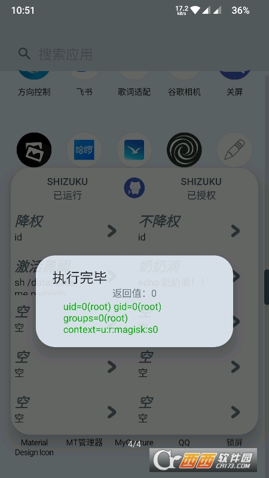
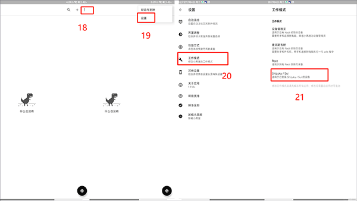

ShizukuRunner 深度解析：为什么手机上跑 shell 命令这件事，值得一套专门的架构
Shizuku + Runner 的组合在 Android 上搭起了一座 Binder 权限桥，让免 root 的 shell 命令执行成为可能。本文拆解这套架构的设计原理、核心取舍与能力边界。
你有没有想过这个问题：在 Android 手机上执行一条 shell 命令，到底要走多远的路？
大多数人的第一反应是「用 adb 连电脑」或者「先 root 再装 Termux」。但这两条路都有明显的别扭——前者意味着每次操作都要电脑在场，后者意味着你得跳过 Bootloader 解锁的层层关卡、接受 Widevine L1 降级的代价。shizukurunner官网 上介绍的 Shizuku + Runner 这套组合解决的，正是这个中间地带的问题：不 root、不插电脑，却能在手机上执行 shell 命令。
这件事听起来像是「又一个自动化工具」，但它背后的架构设计其实挺精巧。我花了些时间把它的原理拆解清楚，发现它的核心是一座 Binder 权限桥——而桥的另一端，是 Android 系统本身。
Shizuku 到底在做什么：Binder 通道上的权限代理
Android 系统的 shell 权限是个奇怪的东西。它比 root 弱很多，但比普通应用权限强不少——你可以用 pm disable-user 冻结预装应用、用 dumpsys 读系统服务状态、用 settings put 改安全设置，这些操作普通 App 根本碰不到。但问题是，shell 权限默认只给 adb shell 进程，不给任何装在手机上的 App。
Shizuku 的解决方案是：自己启动一个 uid=shell 身份的后台服务进程，然后通过 Android 的 Binder IPC 机制暴露接口给其他 App。Runner 就是调用方——它通过 Shizuku 提供的 Binder 通道，把命令字符串发过去，Shizuku 以 shell 身份执行，再把结果回传回来。
这套设计的精妙之处在于它不绕过 Android 权限模型，而是在模型内部找了一条合法的通路。不是 root、不是提权，就是老老实实以 shell 身份跑，但把入口从 USB 调试口搬到了手机上。
三种启动方式背后的权限等级陷阱
安装包从官方下载拿，装好之后还得先搞定服务启动。Shizuku 服务需要先被拉起来，Runner 才能用。目前有三种方式可以拉起这个服务，它们的区别远不止「方便程度」那么简单——本质上是拿到的权限等级不同。

无线调试配对是现在最主流的方式。Android 11 引入了无线调试，Shizuku 利用这个机制让手机上的服务进程获得 shell 权限。配对完成后，每次启动服务只需要在 Shizuku 主应用点一下。但这里有个容易忽略的细节：手机重启后无线调试不会自动开启，意味着每次开机你都要手动打开无线调试 → 进 Shizuku → 点启动。
USB adb 连接方式更传统，但只适用于 Android 10 及以下。命令很简单：adb shell sh /sdcard/Android/data/moe.shizuku.privileged.api/start.sh，但代价是你得插电脑。好处是 Android 版本不受限制，有些定制系统（比如早期 MIUI）的无线调试配对经常失败，USB 方式反而更靠谱。
第三种是通过 Magisk 等 root 框架直接启动，此时服务进程以 uid=0（真正的 root）运行。这是唯一能拿到完整 root 权限的方式——前两种方式跑 pm disable-user 没问题，但跑 su 或修改 /system 分区就会被拒绝。代价也很直接：你得已经 root 了设备，这就把 Shizuku 的「免 root」定位抵消了一半。
三种方式的选择其实是在回答一个问题：你到底需要 shell 权限还是 root 权限？如果你只是想冻结预装 App、改开发者选项开关，shell 权限已经够了；如果你想改 build.prop 或删除系统分区文件，那还是得走 Magisk 这条路。
Runner 作为前端的设计取舍：为什么命令用 JSON 存、输出限 1000 字符
拿到了 shell 权限之后，Runner 要解决的是「怎么在手机上舒服地执行命令」。这里的几个设计选择很有意思——它们都不是随便拍脑袋定的，每个背后都有明确的工程取舍。
JSON 格式而非纯文本
Runner 不把命令存成纯文本 shell 脚本，而是存成 JSON 对象。一个简单的命令长这样：
{
"title": "冻结微博",
"command": "pm disable-user --user 0 com.sina.weibo"
}多个命令组成数组就能批量执行。为什么不直接存 shell 命令？答案是参数化和结构化。JSON 格式让 Runner 能做三件纯文本做不到的事：支持命令模板里的变量替换、支持条件分支（不同场景自动切命令）、以及最实用的——执行前做 JSON 语法校验。在手机上纯手敲长命令本身就容易打错，编辑器能在你保存前提示引号没配对、逗号多写了，这体验差距很大。
代价是 JSON 的转义规则会让新手困惑：shell 里写 \n，JSON 里要写成 \\n；shell 命令里的双引号得加反斜杠转义。去shizukurunner文档翻一下就能找到这些注意事项——这是结构化设计必须承担的复杂度成本。
1000 字符输出上限
Runner 对单次命令的输出有硬性限制，超过约 1000 字符就会强制截断，返回值是 141。141 这个数字不是随便编的——它是 SIGPIPE 信号的退出码。意思是 Runner 检测到输出超了阈值，主动关闭了读取管道，shell 子进程在写入时发现管道已断，收到 SIGPIPE 信号就终止了。
这个限制不是 bug，是安全设计。Runner 跑在手机 App 进程里，如果命令无限输出（比如 logcat 持续打印、top 实时监控），没有终端控制码的 Runner 根本没法给子进程发 Ctrl+C 信号——子进程会一直跑，Runner 界面卡死，直到手机主动杀进程或你重启。所以 Runner 干脆在管道层做了硬截断，宁可丢部分输出也不让 App 挂掉。
解决方式也很直接：要么把输出重定向到文件（dumpsys activity all > /sdcard/activity_dump.txt 2>&1），要么用 timeout 命令限制执行时长（timeout 10 logcat -d > /sdcard/log.txt）。本质上就是 Runner 把「终端交互」这个能力彻底放弃了，换来了稳定性。
自动补全的边界
Runner 的编辑器内置了命令自动补全、语法检查和参数提示。输入 pm dis 会弹出 disable-user，输入包名前几个字符会根据已安装应用列表自动补全。但这个补全只覆盖 Android 系统自带工具——pm、am、dumpsys、settings、getprop、input 这些。
自定义脚本里的命令、第三方二进制、你推送到 /data/local/tmp/ 的自己编译的可执行文件，Runner 全都不认识。这不是功能缺失，是架构决定的——Runner 补全靠的是内置的命令知识库，它不解析你写的脚本逻辑。所以复杂的脚本逻辑，官方建议还是在电脑上写好 JSON 导入，而不是完全在手机上手敲。

哪些事 Runner 做不了：能力边界与禁区
了解了架构原理之后，Runner 做不了的事也就清晰了。有四类命令是 Runner 里要么跑不了、要么不该跑的：
无限输出类：logcat、top -b -d 1、dumpsys activity activities --watch——这些命令会一直跑，Runner 没有终端控制码发终止信号，启动了就只能等手机杀进程。替代方案是用 timeout 限定时长，或者重定向到文件后再读。
超大输出类：dumpsys activity all、dumpsys batterystory、dumpsys package——输出可能几百上千行，直接触发 141 截断。解决办法是重定向到文件。
阻塞交互类：vi、需要输入 Y/N 的 install -r——Runner 不支持交互式命令，它只会给命令喂空输入。解决办法是加 -y 参数或用非交互式方式重写。
破坏性操作：rm -rf /system/*、pm clear --all、setenforce 0——shell 权限下能做的危险操作 Runner 不拦，降权开关只能挡 root 权限下才能做的事。这个边界要记牢：Runner 本身没有安全沙箱，它只是个命令执行器，执行的后果你自己承担。
这套原理意味着什么：适合谁、不适合谁
把前面的原理拼起来，Shizuku + Runner 的定位就很清楚了。它适合的场景有两个明确的前提：你不需要 root 权限，且你希望操作主要在手机上完成而非依赖电脑在场。
典型用户画像：喜欢折腾系统设置的安卓玩家（冻结预装 App、改动画缩放、关通知权限）、需要批量执行 shell 命令的自动化党、想绕过 adb 调试安全限制的 App 开发者。这类人需要的就是 shell 权限的那点「额外能力」，但又不想为此牺牲 Widevine L1 或付出解锁 Bootloader 的成本。
不适合的场景也同样明确：需要修改系统分区或 build.prop 的重度 root 需求（得用 Magisk 方式启动 Shizuku，但那样你已经 root 了）、需要长时间跑监控或日志采集的任务（Runner 不支持持久进程）、需要交互式 shell 会话的场景（用 Termux + root 更合适）。
说到底，Shizuku 解决的是 Android 权限模型里一个被忽视的中间层问题——shell 权限既不够强也不常被用到，但刚好覆盖了大部分日常折腾的需求。Runner 把这个中间层的入口搬到了手机上，用 JSON 格式解决了手机上写命令的体验问题，用输出截断换来了 App 不会卡死的稳定性。这套取舍谈不上完美，但精准地命中了一群明确的用户。
如果你刚好在这个交集里，值得折腾一下；如果你已经 root 了设备、或者只需要偶尔用一次 pm disable-user，那它的价值就没那么大了。工具从来不是越多越好，是越精准越好。为了方便不同地区的用户访问，这套资料在 GitHub、Gitee 和 GitCode 上都有完整的镜像。